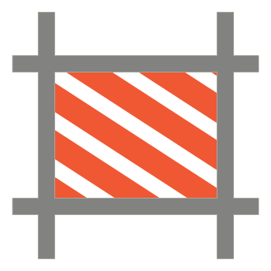
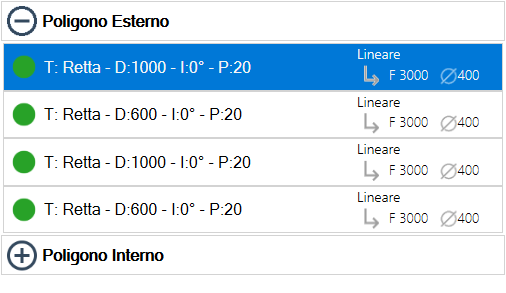
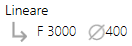
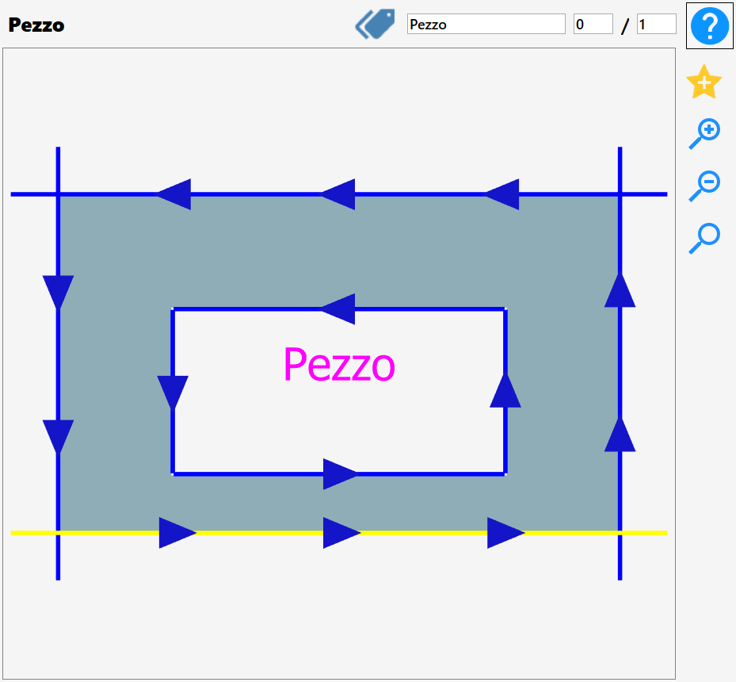
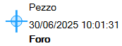
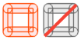

This panel allows the operator to apply different types of working to a designated piece.
Upon opening, the following screen is visible:

WARNING!Some of the functions that will be described in this section are also present on the main page of Parametrix, but with a difference.If a piece, or a cut, is modified through the 'Modify Piece' panel, all pieces of the selected row will be modified accordingly with the same workings.Conversely, if the working is set from the work area, only the selected piece will be modified.
Working types
Through the 'Edit Piece' panel it is possible to apply one or more of the following workings, which will be individually illustrated later. In particular, Parametrix allows to:
Miter Cut |  | Drip system | |
Add | Delete | ||
 | Offset |  | Hole |
Milling |  | Rim | |
 | Lower Cut - (Optional) |  | Downstand |
 | Curbs |  | Surface - (Optional) |
Leveling - (Optional) |  | Channel - (Optional) | |
Fillet | Crop | ||
 | Internal break |  | Drain board flutes |
 | MaxBound - (Optional) | Mirror |
List of cuts
The piece cuts will be visible in the bottom left section of this panel.
Through apposite subdivision, it is indicated if a cut belongs to the external perimeter or to one of the internal perimeters. Thanks to this classification, it is possible to show/hide the list of the cuts belonging to a polygon by pressing on the icon of the corresponding section.

As you can see from the image, in each line are shown some information about the cut that represent. In particular:
 | Manage working |
 | Cut information
|
 | Processing information
|
NOTEThese information change based on the typology of the cut that describe. Not always are showed all information.For example, for holes it is possible viewing exclusively the penetration in the material.
Preview
The main part of the 'Edit piece' functionality makes available to the operator a complete preview of the selected piece, showing all workings currently applied.

It is possible to interact with the displayed piece simply by moving the preview, or using the buttons to modify the zoom that are found on its right.
Furthermore, in this section are present other functions that we will describe below.
 | Mark |
 | Pieces Number |
Add favorite |
Selection of cuts
It is possible to select a cut directly from the preview, observing the change of its color to yellow to confirm the selection, or select the corresponding line inside the cuts list available in the menu in the lower left.
Clicking on the green dot present on the left of each element of the list, it will be possible to disable the relative cut.
In this case the badge will become red and the preview of the piece will be updated with the color of the disabled cut that will change into grey.
In the following example the first two cuts of the external polygon of the piece have been disabled:

Lower bar
In this bar are put at disposal some functionalities that simplify the enjoyment of the Workings from Modify Piece
 | Cuts |
 | Sides |
Chronology | |
Cancel | |
 | Change Visible |
Chronology
Allows to visualize all modifications applied to the current piece and, if necessary, allows to restore the current piece to a previous state.
If changes have been applied to the current piece, these will be displayed in the list on the left:

In the menu on the left are displayed the states of the piece working.
 | State processing
|
The current piece’s state without changes is named 'Default'.
Selecting a voice from the left menu, the corresponding preview is shown at the moment of work's application.

Press the confirm button, it will cause the piece to be restored to the selected state. In this way, the subsequent changes to that selected are removed.
In the lower part of the panel are visible three utility buttons for piece viewing in the preview.
 | Viewing Cuts |
 | Display Measures |
 | Visible angle |
Change Visible
This mode makes available to the operator some buttons visible only when the 'visual change' is enabled.
Each of the following buttons enables or disables one of the following piece's elements:
Cuts | |
Holes | |
 | Milling |
 | Rim |
 | Arrows on cuts |
Piece name | |
Dynamic Tags |